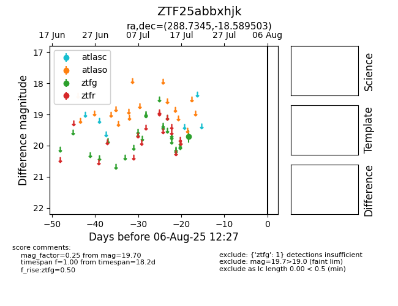

Target ZTF25abbxhjk at 2025-08-06 17:07, see:
FINK: fink-portal.org/ZTF25abbxhjk
Lasair: lasair-ztf.lsst.ac.uk/objects/ZTF25abbxhjk
ALeRCE: alerce.online/object/ZTF25abbxhjk
alt names
ZTF25abbxhjk (ztf,fink)
coordinates:
equatorial (ra, dec) = (288.7345,-18.58950)
galactic (l, b) = (18.6806,-13.39760)
photometry
last ztfg=19.70
1 ztfg detections
